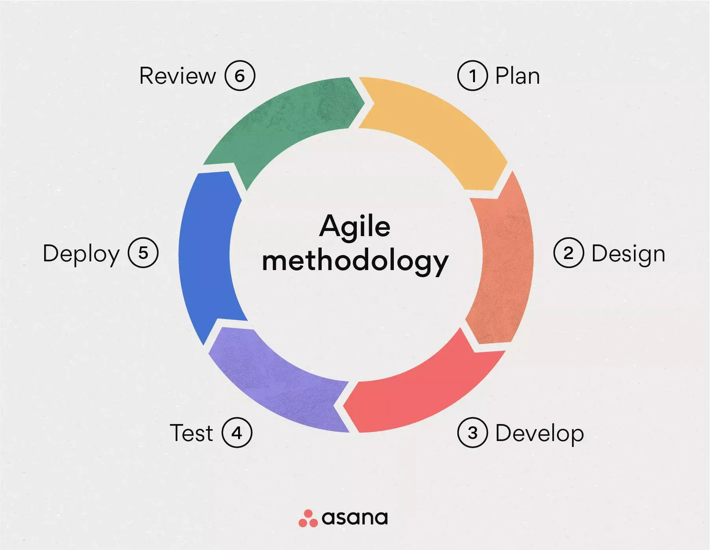

Agile
Agile model:
on loodud selleks, et aidata projektil kiiresti kohaneda muutustega.
Agile mudeli peamine eesmärk on hõlbustada projekti kiiret lõpetamist, ja selleks on vaja paindlikkust.
Samas välditakse kõike, mis on aja ja vaeva raiskamine ja mis pole täpselt oluline.
-
Crystal Agilei metoodika:
paneb suurt rõhku tõhusa suhtluse ja koostöö peale meeskonnaliikmete vahel.
See metoodika on kasulik suure ebakindlusega projektide puhul.
-
Dünaamiliste süsteemide arendusmeetod:
on kohandatud mõõduka kuni suure ebakindlusega projektidele, kus nõuded muutuvad tihti.
Selle eesmärk on luua töötav tarkvara võimalikult lühikese aja jooksul.
-
Funktsioonipõhine arendus:
lähenemist rakendatakse kasutades mitmeid tehnikaid, nagu funktsioonide loendite loomine
mudelite hindamine ja Funktsioonipõhise meetodi rakendamine. See on tõhuse selleks, et tagada,
et lõpptoode tarnitakse õigeaegselt ja vastab nõudmistele.
-
Scrum:
toimib raamistikuna keerukate projektidega tegelemiseks. Seda juhib scrum master, kes jälgib protsessi
ja tooteomanik, kes määrab prioriteedid
-
XP:
Ekstreemprogrammeerimine kasutab nende eesmärkide saavutamiseks spetsiifilisi tavasid, nagu paarisprogrammeerimine
pidev integreerimine ja testimispõhine arendus. See sobib ideaalselt projektidele mille ebakindlus on kõrge ja nõuavad sagedat muutmist,
kuna see võimaldab kiiresti kohaneda uute nõuete ja tagasisidega.
-
Lean Development:
on metoodika, mida saab kohandada mis tahes projekti vajaudstele. See võimaldab arenudsele iteratiivset
ja järkjärgulist lähenemist. Seda iseloomustab iteratsioonide seeria mille igaühe tulemuseks on töötav juurdekasv
mis võimaldabpidevat täiustamist ja kliendile väärtuse edastamist.

Allikas: Geeksforgeeks